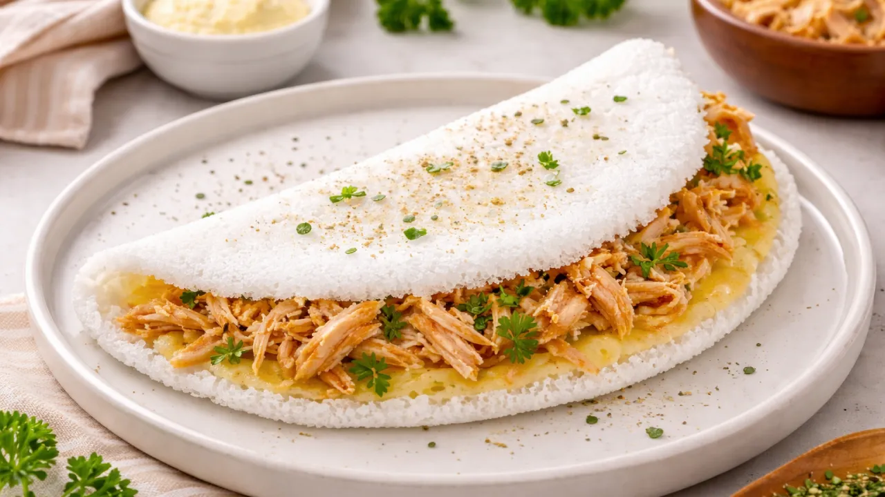
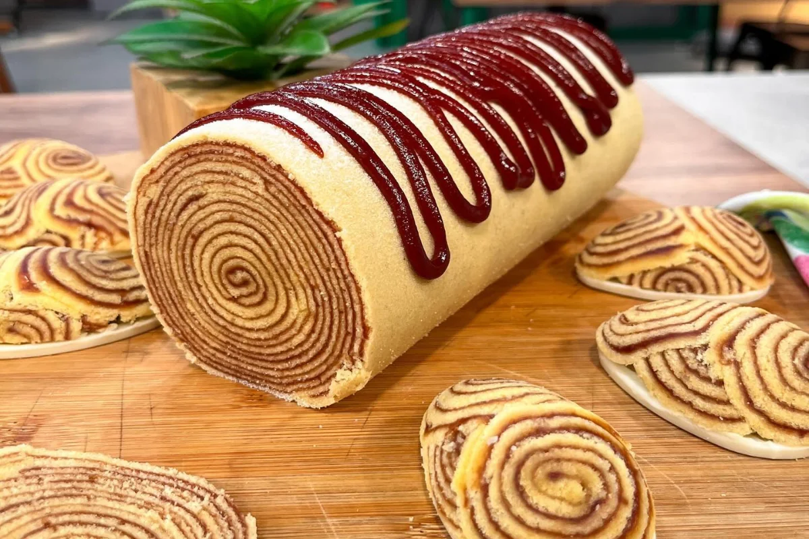

Descubra o Brasil através dos sabores que contam a história de cada região
Uma viagem gastronômica pelas tradições,
ingredientes e sabores que tornam cada
canto do nosso país único.
Regiões brasileiras
Escolha sua região FAVORITA!


🇧🇷 Sabores que conquistaram o Brasil

Brigadeiro
Sudeste
Coxinha
Sudeste
Pastel de Feira
Sudeste

Tapioca
Norte e Nordeste
